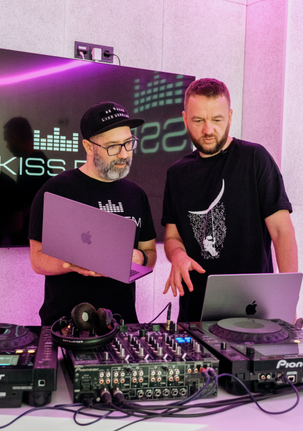

У будь-який час та будь-де
як перетворити ідею на музичний трек
Миттєво фіксувати ідеї та музичні фрагменти – те, що так важливо для митців. Сучасні технології разом із натхненням створюють потужну комбінацію, що надає миттєвість та мобільність у творчому процесі.
Миттєво фіксувати ідеї та музичні фрагменти – те, що так важливо для митців. Сучасні технології разом із натхненням створюють потужну комбінацію, що надає миттєвість та мобільність у творчому процесі.
Саме завдяки гаджетам артисти можуть зберегти свої емоції та враження і ефективно розвивати їх у повноцінні твори.
Як ідея перетворюється на музику, яку можна створювати в будь-якому місці та в будь-який час? Це можна побачити в «Історії одного треку» – проєкті, до якого долучився DJ Lutique – музикант, продюсер, саундпродюсер, ютубер, подкастер, організатор багатьох музичних та благодійних івентів.
Більше про проєкт «Історія одного треку», а також про музичне натхнення і можливість його зафіксувати – в нашому матеріалі.
Натхнення і як його перетворити на реальні проєкти

Для творчих людей неабияк важливо вловлювати момент, коли приходить муза, і зберігати ідеї, які потім можуть перетворитися на повноцінний трек чи навіть альбом. DJ Lutique пояснює, що натхнення може з’явитися будь-де – і кайф, на його думку, якраз в тому, що можна просто відкрити улюблений MacBook та зафіксувати ідею якнайшвидше, а вже на студії перейти до більш детальної обробки та роботи загалом.
За словами Lutique, полегшує процес саме якісне «залізо», яке не підведе у створенні треку:
«Існує багато додаткових девайсів, які працюють в прекрасному тандемі з MacBook та полегшують роботу при написанні музичного твору».
Що ж допомагає творчим людям вчасно фіксувати ідеї та реалізовувати їх? За словами музиканта, MacBook багато років є його незамінним помічником для створення треків. От чому DJ Lutique обирає саме цей ноутбук:
«Бо він має сучасний та потужний процесор, швидкий та об'ємний SSD, великий об'єм сучасної оперативної пам'яті. Звісно ж, для продюсера – це також можливість під'єднання улюбленого аудіоінтерфейсу».
MacBook є незамінним інструментом для музикантів.
Ось кілька переваг, які роблять цю техніку ідеальним вибором:
MacBook оснащений потужними процесорами Apple Silicon, які забезпечують швидку та ефективну роботу з аудіо і музичними програмами. Наприклад, MacBook Pro може легко впоратися з обробкою великих аудіофайлів і запуском вимогливих синтезаторів.
Вбудована аудіосистема високої якості зі звуком, який точно передає деталі і динаміку музики.
Дозволяє точно налаштувати звук, редагувати музичні ноти та переглядати візуалізацію звукових хвиль з великою точністю.

За допомогою яких програм можна створити пісню?
DJ Lutique пояснює, що у своїй роботі він найчастіше використовує Cubase, Traktor та RecordBox, які, на його думку, працюють бездоганно. Втім, ними вибір програм для створення треків не обмежується:
«Написати трек або записати пісню сьогодні можливо фактично у будь-якому DAW. Я використовую Cubase 12, та бачив крутий продакшн у Ableton та навіть у Fruity Loops!»
От які програми радить MR.Sunny:
«Якщо казати про рідні для Maс програми, то можна залучити Logic Pro або GarageBand.
Для мене написання музики – це завжди експеримент. Я зростав на діджеях, що активно використовували в своїх роботах семплування. Це The Chemical Brothers, The Prodigy, Fatboy Slim та багато інших. Для мене близький саме такий підхід. Спочатку я чую якийсь семпл або звук, який мене дуже чіпляє, і я закидаю його в проєкт першим, а потім вже будую навколо нього ритм-секцію.
Зазначу, насамперед я музичний селекціонер та діджей. Свої саундпродюсерські амбіції я, як і більшість українських музикантів, маю можливість реалізовувати тільки у вільний час від основних проєктів. Тому я часто дивлюсь ютуб-курси, організовую цікаві колаборації і, звісно, не соромлюсь звертатись за консультаціями до більш успішних в цій діяльності колег, наприклад, до DJ Lutique».
Більше про оригінальні програми MacBook:
Популярна безкоштовна програма для запису та створення музики. Вона має широкий набір інструментів та звуків, а також вбудовані функції для змішування, мастерингу та створення саундтреків для відео.
Ця програма є потужним інструментом для продюсерів, композиторів та звукорежисерів. В ній безліч можливостей для запису, редагування та змішування аудіо, а також велика бібліотека звукових ефектів та інструментів. З однозначних плюсів – програма підтримує різні формати файлів і працює з MIDI-контролерами.
Ідеальна для живих виступів та концертів. Вона дозволяє створювати власні концертні сети, використовуючи вбудовані інструменти, ефекти та звукові бібліотеки. MainStage також підтримує підключення зовнішніх MIDI-клавіатур та контролерів.
ПЗ для професійного звукового монтажу та постпродакшну. У програмі є ряд інструментів та ефектів для зміни та покращення аудіо, створення звукових ефектів та саундтреків.
Усі ці програми підходять для сміливих творчих експериментів. Головне, що ними можна скористатися в будь-який момент, коли техніка під рукою – і це максимально зручно!
Чому саме MacBook підходить для створення треків:
MacBook оснащений потужними процесорами Apple Silicon, які забезпечують швидку та ефективну роботу з аудіо і музичними програмами. Наприклад, MacBook Pro може легко впоратися з обробкою великих аудіофайлів і запуском вимогливих синтезаторів.
Компактний та легкий дизайн дозволяє легко брати його з собою в турне, на концерти, в студію чи будь-куди! Плюс – потужна батарея, яка забезпечує тривалий час автономної роботи.
MacBook має достатньо пам’яті для всіх аудіофайлів, семплів, плагінів та проєктів. А вбудована функція Time Machine дозволяє автоматично резервувати дані, щоб точно їх не втратити.
Деякі моделі MacBook оснащені панеллю, яка забезпечує швидкий доступ до регулювання гучності, перемотування треків, мікшування та інших музичних параметрів.
Максимальний захист доступу до пристрою та даних, що важливо для музикантів, які працюють зі збереженими аудіозаписами та музичними проєктами.
Більше про проєкт та про те, як можна створювати музичний трек в будь-якому місці (зокрема на прогулянці та на свіжому повітрі), дивіться у відео.
А ще ролик неабияк надихає – тож, можливо, після перегляду ви теж зможете реалізувати свої сміливі ідеї і записати пісню чи навіть альбом за допомогою MacBook: